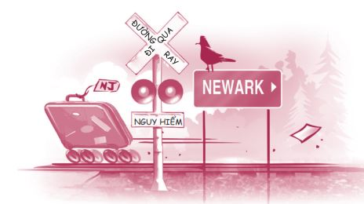
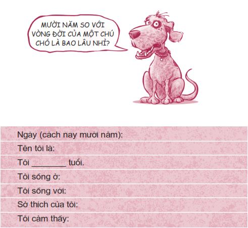
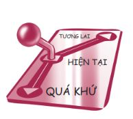

.
1. Chuyện học hành. Bạn sẽ làm gì với chuyện học hành của mình?
2. Bạn bè. Bạn sẽ chọn ai làm bạn và bạn sẽ trở thành một người bạn như thế nào?
3. Mối quan hệ với cha mẹ. Bạn có hòa hợp được với cha mẹ của mình không?
4. Hẹn hò và tình dục. Bạn sẽ hẹn hò với ai và bạn xử lý vấn đề tình dục như thế nào?
5. Nạn nghiện ngập . Bạn sẽ làm gì với nạn hút thuốc, uống rượu, sử dụng ma túy và các chất gây nghiện khác?
6. Giá trị bản thân. Bạn có chọn yêu thương bản thân mình không?
Rất có thể bạn chưa nghĩ nhiều về những quyết định này. Hoặc cũng có thể bạn đang phải vật lộn với một trong số đó, hay với tất cả. Dù đang ở trong hoàn cảnh nào, bạn cũng cần phải nỗ lực hết sức mình để nghiên cứu, tìm tòi về mỗi quyết định, những điểm được - điểm mất, mặt tốt - mặt xấu, để có thể đưa ra những quyết định sáng suốt. Hẳn bạn sẽ không muốn một ngày kia bạn phải bước ra đời với câu cảm thán: “Giá mà mình biết được...”.
Rất nhiều quyết định ở giai đoạn tuổi trẻ của bạn có thể tác động đến cuộc đời bạn mãi mãi. Trong quyển sách có tựa đề Standing for Something (tạm dịch: Đại diện cho điều gì đó), tác giả, nhà lãnh đạo tôn giáo Gordon B. Hinckley đã kể câu chuyện thời trẻ của ông như sau:
Lúc còn làm việc ở văn phòng đường sắt Denver, tôi chịu trách nhiệm về toa hành lý và hàng chuyển phát nhanh trên các chuyến tàu chở khách. Một ngày nọ, tôi nhận được cuộc gọi từ đối tác ở New Jersey thông báo rằng có một chuyến tàu chở khách đến nơi mà không có toa hành lý. Ba trăm hành khách đang nổi giận và họ hoàn toàn có quyền làm thế.
Chúng tôi phát hiện ra con tàu đã đi từ Oakland, California, đến St. Louis, tại đó, một nhân viên bẻ ghi đã nhầm lẫn và dịch chuyển một thanh thép lệch chỉ tám xăng-ti-mét. Nhưng thanh thép ấy lại chính là một chỗ rẽ và thế là toa hành lý đáng lý phải đến Newark lại thẳng tiến về New Orleans cách đó hơn hai ngàn cây số.
Các nhà tù khắp nơi trên thế giới có biết bao con người đã đưa ra các lựa chọn thiếu sáng suốt và thậm chí mang tính hủy diệt, các cá nhân chỉ cần dịch chuyển “một thanh thép ở ngay chỗ rẽ” của cuộc đời mình một chút thôi là đã ngay lập tức đi nhầm đường và đến nhầm chỗ.

Mỗi quyết định trong sáu quyết định nêu trên đều là một quyết định mang tính bước ngoặt, sai một ly là đi một dặm.
CUỘC THÍ NGHIỆM MƯỜI NĂM
Trước khi tìm hiểu kỹ hơn ở phần sau, tôi muốn bạn hãy thử thực hiện thí nghiệm nhỏ sau đây:
Hãy tưởng tượng bạn có thể quay về quá khứ cách nay mười năm và tự giới thiệu bản thân mình với một ai đó.
Nếu bạn tên Jeremie, mười bảy tuổi, thì lúc đó bạn sẽ giới thiệu đại loại như sau: “Xin chào, mình là Jeremie. Mình bảy tuổi, sống ở Toronto, Canada, cùng với cha mẹ và em trai bốn tuổi của mình. Mình vừa học xong lớp Một. Mình có một con cá vàng tên Spot. Mình thích tô màu và chơi đá bóng. Mình thấy rất hạnh phúc”.
Nếu bạn đang đọc quyển sách này và đang ở cạnh một người nào đó, hãy thử thực hiện thí nghiệm này với họ. Hãy nói cho họ biết rõ rằng đây là yêu cầu của quyển sách để họ không cho rằng đầu óc bạn có vấn đề. Hãy giới thiệu về mình như hồi mười năm trước, rồi để người kia làm điều tương tự. Nếu bạn chỉ có một mình hoặc quá ngượng ngùng (cũng không phải chuyện gì to tát đâu), bạn chỉ cần điền vào chỗ trống theo mẫu dưới đây là được.

Giờ thì hãy giới thiệu bản thân như cách bạn muốn mình sẽ trở thành vào mười năm sau. Hãy cho họ biết bạn hiện đang làm gì và đôi chút thông tin về bản thân bạn. Hãy nhớ rằng đây chính là phiên bản mà bạn muốn trở thành trong mười năm nữa. Tức là Jeremie sẽ giới thiệu đại loại như sau:

“Xin chào, mình là Jeremie, hai mươi bảy tuổi. Mình sống ở Vancouver, Canada. Mình vừa kết hôn với một phụ nữ tuyệt vời tên Jasmine. Cách nay mấy năm, mình tốt nghiệp ngành âm nhạc tại Đại học Toronto và giờ mình đang dạy đàn dương cầm tại một trường âm nhạc tư thục. Mình rất yêu gia đình mình và mình rất hay đi chơi cùng họ. Mình thật sự rất hài lòng về hướng đi của mình trong cuộc sống.”
Bạn vừa mới thực hành một cuộc du hành thời gian. Khi bạn quay ngược lại mười năm, những ký ức nào trỗi dậy? Bạn đã ở một nơi tốt đẹp hay tồi tệ?
Còn trong tương lai thì sao? Bạn hình dung được gì trong mười năm sắp tới? Bạn muốn làm những gì và muốn trở thành ai trong thập niên tiếp theo?
TỰ DO LỰA CHỌN
Tin vui là bạn sẽ trở thành thế nào sau mười năm nữa hoàn toàn do bạn quyết định. Bạn được tự do lựa chọn tạo dựng cuộc sống của mình. Đây được gọi là quyền lựa chọn hay tự do ý chí , là quyền cơ bản của mỗi người. Hơn nữa, bạn có thể thực hiện quyền này ngay tức thì! Tại bất kỳ thời điểm nào, bạn đều có thể lựa chọn bắt đầu tôn trọng bản thân hơn hoặc ngưng việc giao du với những người thiếu tôn trọng mình. Cuối cùng, chính bạn là người lựa chọn sống hạnh phúc hay khổ đau.
Có một thực tế là mặc dù bạn được tự do lựa chọn, nhưng bạn lại không thể lựa chọn các hệ quả do lựa chọn của mình mang đến. Chúng đã được định trước. Đó là một thỏa thuận theo gói. Cổ ngữ có câu: “Nếu bạn cầm một đầu của cây gậy lên, tức là bạn cũng đang cầm lên đầu còn lại”. Lựa chọn và hệ quả là hai thứ luôn đi cùng với nhau. Ví dụ, nếu bạn quyết định học hành chểnh mảng và không học đại học, bạn sẽ phải nếm mùi cay đắng của việc không xin được việc tốt lương cao. Tương tự, nếu bạn hẹn hò một cách khôn ngoan và tránh tình dục bừa bãi thì bạn sẽ được hưởng quả ngọt của việc giữ được phẩm hạnh, đồng thời không phải lo lắng về các bệnh lây lan qua đường tình dục cũng như việc mang thai ngoài ý muốn.
Từ “decision” (quyết định) trong tiếng Anh có nghĩa gốc La-tinh là “cắt đứt với”. Nói “có” với một điều nào đó có nghĩa là nói “không” với một điều khác. Đây là lý do vì sao việc ra quyết định có thể rất khó khăn.
Tốt nhất chúng ta nên quyết đoán trong việc đưa ra quyết định. Ví dụ, hồi ở tuổi teen, tôi đã quyết định mình sẽ không hút thuốc, không uống rượu và không sử dụng ma túy. (Hiện tại, dù vẫn là người mắc phải nhiều sai lầm thời tuổi trẻ - mà tôi sẽ kể cho các bạn nghe sau - nhưng ít ra tôi đã kiên định với quyết định đúng đắn ấy của mình.) Vì thế, tôi tránh những bữa tiệc chè chén bê tha. Tôi không giao du với bạn bè có chơi ma túy. Tôi không cảm thấy bị áp lực khi làm vậy bởi vì tôi đã quyết đoán và không dây dưa trong việc ra quyết định của mình.
Một số người có thể cho rằng tôi đã bỏ lỡ nhiều niềm vui. Cũng có thể là thế thật. Nhưng với tôi, lựa chọn này đã mang đến cho tôi sự tự do, giúp tôi tránh được chuyện say xỉn và làm những điều ngu ngốc, tránh phạm tội lái xe khi say rượu và tránh được nạn nghiện ngập.